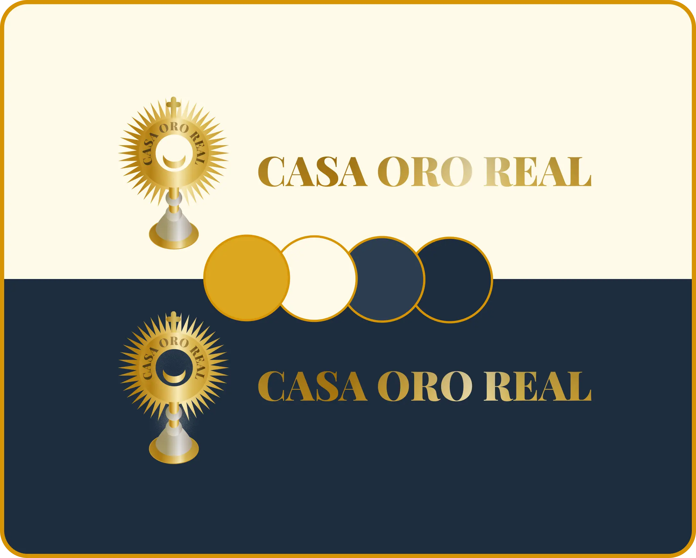

Project Overview
I partnered with Casa Oro Real, a master-class artifact restoration service, to architect their entire digital presence from the ground up. I served as the sole creator, managing the end to end lifecycle from client consultation and brand strategy to UX/UI design and custom front end development, launching a complete business asset in just one week.
MY ROLE
Brand Strategist, UX/UI Designer, Frontend Developer
TIMELINE
1 Week (Rapid Concept to Launch)
DELIVERABLES
Brand Identity, Custom Website, Sales Enablement Tool
The Strategic Foundation: Architecting Trust from Scratch
The client, a master craftsman, was entering a new market with zero digital presence. In a high trust industry, this invisibility was a critical business vulnerability. The foundational challenge was not just to build a website, but to engineer credibility.

1. The Brand Identity as the First Solution
2. The UX Blueprint for Evidence
The Development Process: Engineering the "Evidence Locker"
The Before and After Hook
The Digital Atelier Gallery
The Outcome: A Professional Sales & Credibility Asset
Guilherme V. Owner, Casa Oro Real